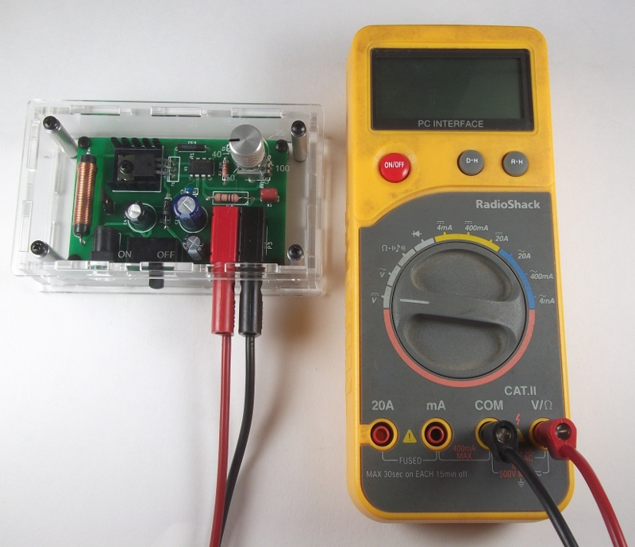

Assembly step 3: Testing the power supply¶
Safety Notes & Precautions¶
Prior to operation the power supply should be placed within the insulating laser cut enclosure as described in the previous step in order to isolate the user from high voltages. This circuit can produce voltages in excess of 100V. This is more than enough to give you a potentially severe electric shock if not handled correctly. Therefore, the operator should take care to avoid contact of any body part with the live output of the power supply. If you are unfamiliar with how to work with high voltage, please refrain from performing these tests.
Test instructions¶
- Ensure that the power supply switch is in the off position and that the DC jack is disconnected.
- Attach the banana patch cords to the positive and negative outputs of the power supply as shown in the image.
Using the Multimeter¶
- Connect the positive banana patch cord to the V input of the multimeter and the negative banana patch cord to the COM input as shown in the image. Note, ensure that the multimeter is set to measure DC voltages and has an input range of at least 100V.

- Insert the plug from the 15V wall wart into the DC jack of the power supply.
- Place the output of the supply to its lowest setting by turning the potentiometer as far clockwise as it will go.
- Turn on the power supply using the switch.
- Examine the output of the supply on the multimeter display. Change the output voltage by turning the potentiometer. The output voltage should vary from about 25-100V throughout the range of the potentiometer. Markings indicating the expected output voltage for a given potentiometer setting are etched on the laser cut enclosure and can be used as a reference. Note, as the power supply is only lightly loaded during these tests, the output voltage may take a small amount of time to settle when changing from a higher to lower voltage setting.
- When you are finished examining the output voltage. Turn the power supply switch off and unplug the 15V plug from the DC jack.